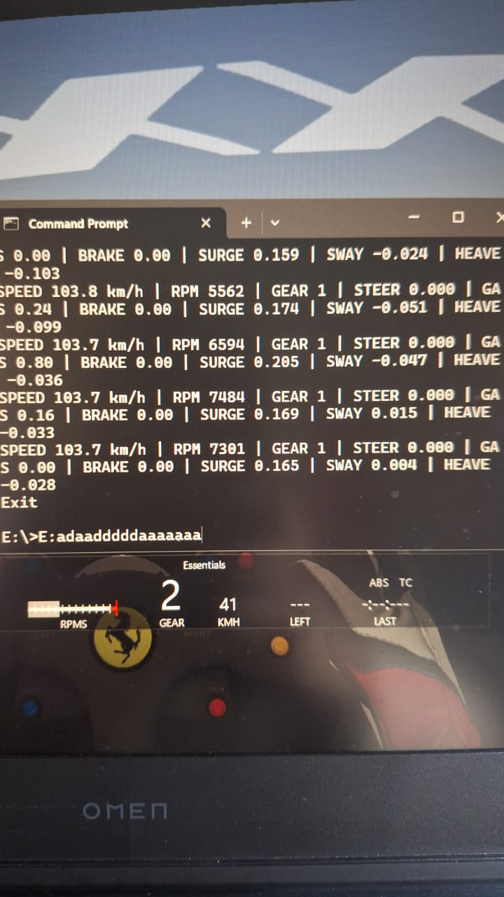
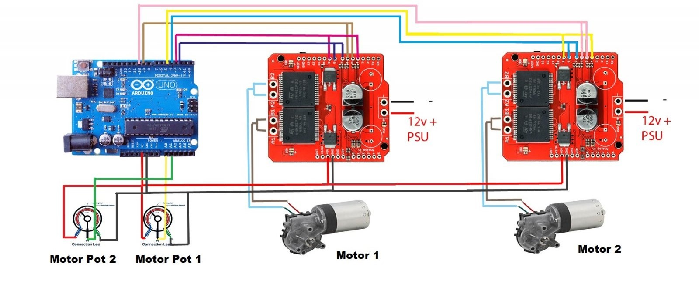
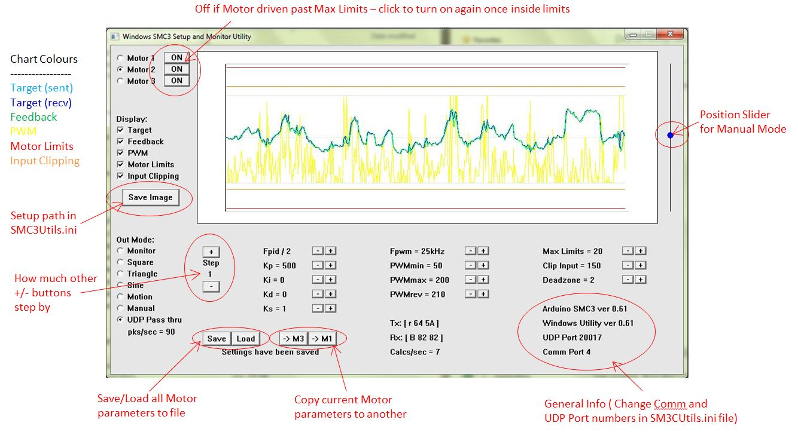

Project · Python · Arduino · Hardware
A motion rig for racing games
The software side of a home-built motion rig. Live physics telemetry from Assetto Corsa is turned into motor targets and sent to an Arduino driving two DC motors, so the seat moves with the car.
Architecture
- Telemetry processing A Python script interfaces with Assetto Corsa's telemetry API and reads live physics data (accelerations, orientation and force terms) from the game.
- Actuator mixing Vehicle motion is mixed into per-motor targets. Pitch loads both channels equally, while roll shifts the balance between them in opposite directions.
- Hardware bridge Targets are streamed over USB serial to an Arduino Uno running SMC3, which closes the position loop for each motor with PID control using potentiometer feedback.

The bridge prints the decoded telemetry as it runs. The surge, sway and heave channels are the inputs to the mixer, so this output was the main debugging tool when tuning the mapping from vehicle motion to motor positions.


Next steps
Current work is tuning the mixing coefficients so that high-frequency vibration is separated from the larger positioning movements, which should keep tracking stable under rapid multi-axis load changes.